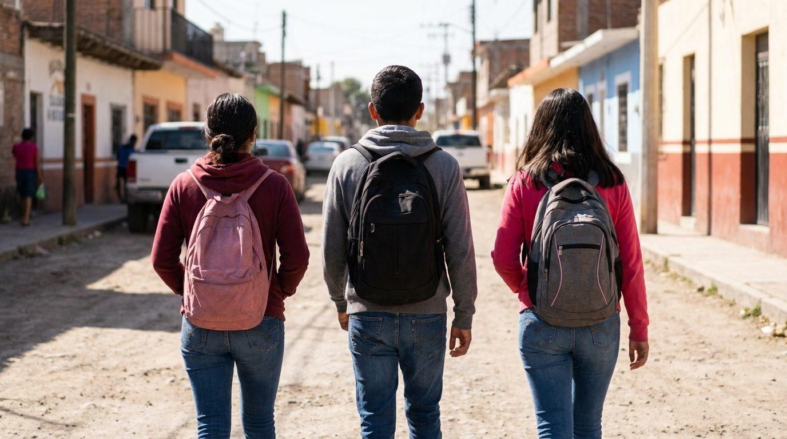

El huerto
Los ciclos de la tierra, la soberanía alimentaria y el respeto por el ecosistema de Zapotal. La naturaleza como primer aula.
El proyecto educativo
En este primer año escolar se abrirán el primer y segundo grado de secundaria, con una enseñanza bilingüe y multinivel. En esta etapa el proceso de aprendizaje nutre la individualidad que emerge, la capacidad de observación y el pensamiento analítico.

Talleres
Los ciclos de la tierra, la soberanía alimentaria y el respeto por el ecosistema de Zapotal. La naturaleza como primer aula.
Construir con materiales locales: geometría aplicada, paciencia y la creación de objetos útiles para la comunidad.
Ritmo, voz, dibujo y color. La expresión artística como una forma de conocer el mundo y de conocerse a uno mismo.
Convertir una idea en un proyecto real: planear, crear y llevar a la comunidad el fruto del propio trabajo.
Pedagogía
Huerto, carpintería con bambú, música y artes, y jóvenes emprendedores. La acción manual como puerta al mundo.
La conexión emocional con lo aprendido y con la comunidad que sostiene el proceso.
La claridad intelectual y el juicio propio: evaluaciones, proyectos y libro de aprendizaje.
El primer año marca el inicio de una nueva forma de habitar el espacio escolar. Los estudiantes transitan desde la infancia hacia la preadolescencia con una guía clara que equilibra la libertad y la estructura básica necesaria para el desarrollo.
Se fomenta la nivelación académica a través de proyectos artísticos y manuales que despiertan el interés genuino por el conocimiento, estableciendo un vínculo sólido con sus pares y sus maestros.
En el segundo grado, los conocimientos adquiridos comienzan a cristalizarse a través de la experimentación activa. Los jóvenes asumen mayores responsabilidades en la gestión de sus propios proyectos, desarrollando una autonomía guiada hacia la resolución de problemas reales.
Se integra el pensamiento analítico con la práctica artesanal, permitiendo que la profundidad de los temas académicos se refleje en obras tangibles y funcionales que benefician al entorno inmediato.
Materias
Matemáticas, ciencia, humanidad y arte son la base del ciclo escolar. Sobre ellas se construyen los talleres y los proyectos: lo que se hace con las manos siempre tiene detrás un contenido que se estudia.
Razonamiento y resolución de problemas, con retos a la medida de cada estudiante.
Observación, experimentación y pensamiento analítico en contacto con el entorno.
Historia, lengua y comprensión del mundo para formar criterio propio.
Expresión, ritmo, creatividad y cuerpo como parte indisociable del aprendizaje integral.
“Nuestro mayor esfuerzo debe ser desarrollar seres humanos libres, capaces de dar propósito y dirección a sus propias vidas.”— R. Steiner
Nuestra pedagogía es activa y experiencial. Los estudiantes participan en proyectos reales — el huerto, la carpintería con bambú, las artes, el taller de jóvenes emprendedores — y realizan un servicio social en la forma que ellos mismos eligen: con la tierra, con personas o con animales, de manera individual o en grupo.
Cuidar el espacio y decidir sobre su servicio social forma parte del aprendizaje: autonomía real, con acompañamiento real.